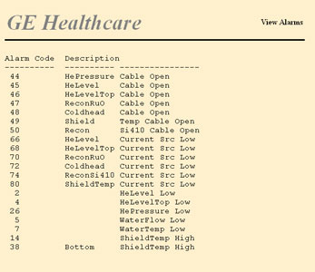
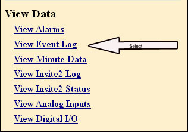
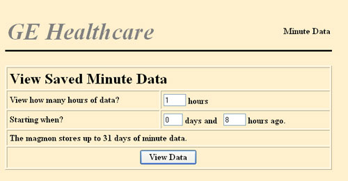
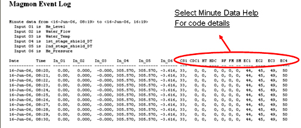
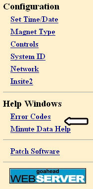
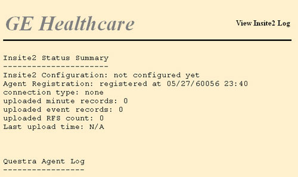
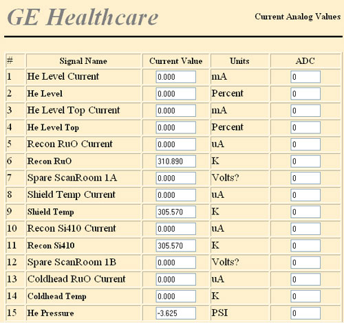
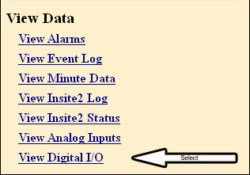

GE Exclusive Use Only
Direction 5440000, Rev# 5
Signa HDxt Service Methods
Module Version 2.0, Version Date 3/16/10
GE Exclusive Use Only |
The View Alarms screen displays the alarm or fault conditions currently present on the Magmon3. If faults are present, the list will display them in order of importance with the most serious faults at the top of the list.
Click View Alarms on the View Data menu.
Illustration 1: View Alarms on View Data Menu

An example of the resulting Alarms is shown below.
Illustration 2: Example of View Alarms Report

The Magmon3 maintains a log of its events. The contents of the event log can be viewed on the web interface. The View Event Log page has a filter to select what type of events and how many days of events should display. The Magmon3 must be running in Proprietary Mode, and you must be connected and logged into the Magmon3 with your laptop.
Click View Event Log on the View Data menu.
Illustration 3: View Event Log on View Data Menu

Select the event type(s) to view, enter the number of days to display, and click [Submit].
Illustration 4: View Magmon Event Log

The selected events will be displayed in one long list. See the illustration below for an example of the output.
Illustration 5: Example of Magmon Event Log

The Magmon3 reads each of its sensors once per minute and saves this data internally. One month of minute data will be stored on the Magmon3.
Click View Minute Data on the View Data menu.
Illustration 6: View Minute Data on View Data Menu

Enter the number of hours and starting point as shown below, and click [View Data].
Illustration 7: Minute Data Selections

| NOTE: | The Magmon3 only shows this data as text (example shown
in the illustration below).
|
Click Select Minute Data Help for code details on the Magmon Event Log report.
Illustration 8: Minute Data - Example Output

Select Minute Data Help or Error Codes to view the definition of the codes listed in the screen output.
Illustration 9: Example Output for Minute Data

The View Insite2 Log page shows activity related to the Magmon3 connecting to the back office and uploading data. Data in this log is lost when the Magmon3 is turned off.
The View Insite2 Status page shows whether the Insite2 agent is running or not. Click View Insite2 Status on the View Data menu.
Illustration 10: View Insite2 Status on View Data Menu

An example of the resulting Insite2 Output is shown below.
Illustration 11: Example of Insite2 Status History Output

| NOTE: | For a complete listing of Insite2 status messages and service actions, go to TroubleshootingSection 2, Troubleshooting Connectivity Issues Using View Insite2 Status. |
The View Analog Inputs page displays the current values seen by Magmon3 analog inputs. The page automatically updates several times a minute to keep the readings current. It is a diagnostic aid to confirm that the sensors are properly connected and configured.
Click View Analog Inputs on the View Data menu.
Illustration 12: View Analog Inputs on View Data Menu

An example of the analog values that will display is shown below.
Illustration 13: Example of Analog Inputs Report

The View Digital I/O page displays the current values seen by the digital inputs and outputs of the Magmon3. The page automatically updates several times a minute to keep the readings current. It is a diagnostic aid to confirm that the I/O lines are properly connected and configured. Click View Digital I/O on the View Data menu.
Illustration 14: View Digital I/O

An example of the digital inputs/outputs values that will display is shown below.
Illustration 15: Digital Inputs/Outputs Example